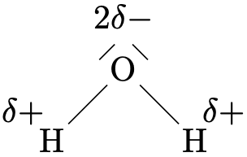
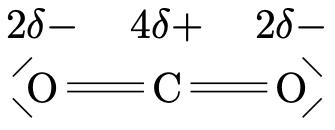
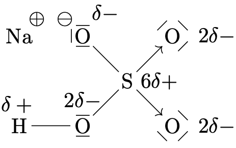
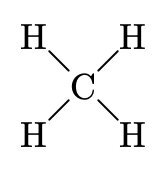
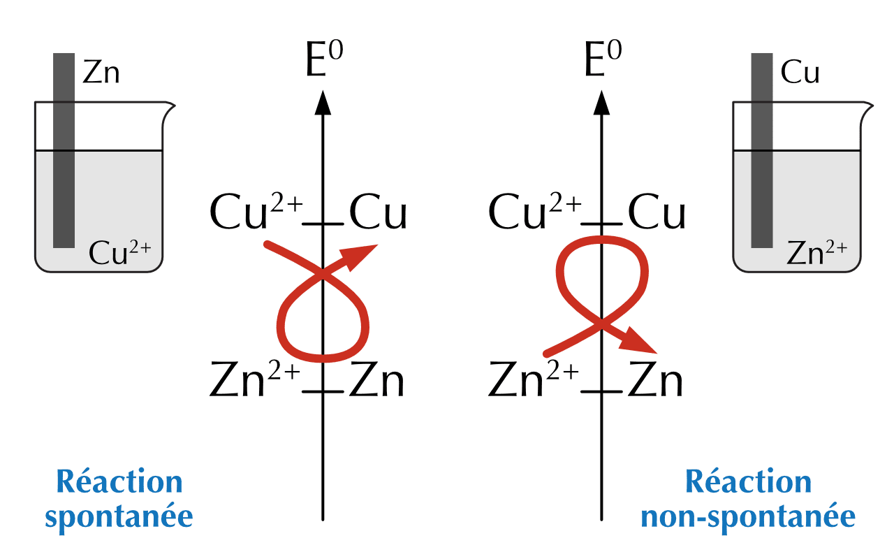

20 Les réactions d’oxydoréduction
- Attribuer les nombres d’oxydations aux différents éléments d’un composé.
- Distinguer une réaction d’oxydoréduction.
- Décrire les différents termes en lien avec les réactions d’oxydoréduction.
- Déterminer la réaction spontanée entre deux couples oxred.
- Équilibrer les équations d’oxydoréduction.
Nous avons rencontré deux types de réactions qui peuvent se produire lorsque deux solutions d’électrolytes sont mélangées : la précipitation, dans laquelle deux composés ionique échangent des ions, et la neutralisation acide-base, dans laquelle un proton est transféré d’un acide à une base. Dans ce chapitre, nous nous intéressons aux réactions d’oxydoréduction (ou réactions oxred).
Réaction d’oxydoréduction
Réaction chimique dans laquelle des électrons sont transférés d’un réactif à un autre.
Nous avons vu que de nombreuses substances sont des composés ioniques. Le chlorure de sodium, par exemple, peut être obtenu par la réaction du sodium élémentaire et du dichlore :
\[ \ce{ 2 Na(s) + Cl2(g) -> 2 NaCl(s) } \qquad \qquad \ce{ Ca(s) + Br2(g) -> CaBr2(s) } \]
Dans cette réaction, le sodium solide (Na), qui contient des atomes de sodium neutres, réagit avec le dichlore, formé de molécules diatomiques (Cl2) neutres, pour former le solide ionique NaCl, qui contient les ions Na+ et Cl-. De même, lorsque le calcium élémentaire réagit avec le dibrome il former le solide ionique CaBr2, qui contient les ions Ca2+ et Br-
De telles réactions, dans lesquelles un ou plusieurs électrons sont transférés, sont des exemples de réaction d’oxydoréduction.
20.1 Le nombre d’oxydation
Comment savoir si l’on est en présence d’une réaction d’oxydoréduction ? Le nombre d’oxydation, ou état d’oxydation, permet de suivre les électrons dans une réaction d’oxydoréduction.
Nombre d’oxydation
Le nombre d’oxydation est la charge électrique fictive qu’aurait un atome si les électrons de liaison étaient attribués à l’atome le plus électronégatif.
Le nombre d’oxydation représente le nombre d’électrons que possède un atome dans un composé. Les nombres d’oxydation sont représentés par des nombres entiers, qui peuvent être positifs, négatifs ou nuls. Dans certains cas, l’état d’oxydation peut être une fraction, car il résulte d’une moyenne.
Prenons par exemple les composés covalents suivants :
| \(\ce{H2O}\) | \(\ce{CO2}\) | \(\ce{NaHSO4}\) | \(\ce{CH4}\) |
 |
 |
 |
 |
| oxygène: -2 | oxygène: -2 | sodium: +1 | hydrogène: +1 |
| hydrogène: +1 | carbone: +4 | hydrogène: +1 | carbone: -4 |
| oxygène: -2 | |||
| soufre: +6 |
20.1.1 Attribuer les nombres d’oxydation
L’application d’une série de règles simples permet d’attribuer les états d’oxydation des atomes de la plupart des composés.
| Règles | Exemples | NO |
|---|---|---|
| Un atome à l’état élémentaire a un nombre d’oxydation de 0. | \(\ce{Na}\), \(\ce{Fe}\), \(\ce{O2}\), \(\ce{Cl2}\) | 0 |
| Un ion monatomique a un nombre d’oxydation égal à sa charge. | \(\ce{Na}^{+}\), \(\ce{Ca}^{2+}\), \(\ce{Al}^{3+}\) | +1,+2,+3 |
| L’hydrogène a généralement un NO de +1 dans ses composés | toujours, sauf hydrures (H-) | +1 |
| L’oxygène a généralement un NO de -2 dans ses composés | toujours, sauf peroxydes (O-) | -2 |
| Le fluor a généralement un NO de -1 dans ses composés | toujours, sauf exception | -1 |
Un élément peut porter un nombre d’oxydation différent selon l’espèce chimique dans laquelle il se trouve. Vous trouverez dans le tableau périodique, les nombres d’oxydation courants pour un élément, avec en gras, les nombres d’oxydation les plus stables.
La somme des nombres d’oxydation de toute espèce chimique doit correspondre à la charge globale de l’espèce. En d’autres termes, la somme des nombres d’oxydation pour toute molécule doit être égale à zéro et doit être égale à la charge de l’ion polyatomique.
Déterminez le nombre d’oxydation de chaque élément des espèces suivantes :
- \[ \ce{ZnCl2} \]
- \[ \ce{SO3} \]
- \[ \ce{HNO3} \]
- \[ \ce{Cr2O7}^{2-} \]
- \[ \overset{+2\ -1}{\ce{ZnCl2}} \]
- \[ \overset{+6\ -2}{\ce{SO3}} \]
- \[ \overset{+1\ +5\ -2}{\ce{HNO3}} \]
- \[ \overset{+6\ -2}{\ce{Cr2O7}^{2-}} \]
20.2 Distinguer une réaction d’oxydoréduction
Une réaction d’oxydoréduction est caractérisée par un transfert d’électrons. Dans certains cas, le transfert se fait au sens propre pour former des ions, comme dans la réaction :
\[ 2\overset{0}{\ce{Na}}(s) + \overset{0}{\ce{Cl2}}(g) \ce{->} 2\overset{+1\ -1}{\ce{NaCl}}(s) \]
Cependant, le transfert d’électrons est parfois moins évident. Prenons, par exemple, la réaction de combinaison de méthane.
\[ \overset{-4\ +1}{\ce{CH4}}(g) + 2\overset{0}{\ce{O2}}(g) \ce{->} \overset{+4\ -2}{\ce{CO2}}(g) + 2\overset{+1\ -2}{\ce{H2O}}(g) \]
Le nombre d’oxydation est un moyen pratique de mettre en évidence les transferts électrons dans les réactions d’oxydoréduction. Au sein d’une substance, on définit le nombre d’oxydation de chaque atome qui nous indique si l’atome est neutre, riche ou pauvre en électrons. En comparant le nombre d’oxydation d’un atome avant et après une réaction, on peut déterminer si l’atome a gagné ou perdu des électrons et donc, si on est en présence d’une réaction d’oxydoréduction.
Dans le cas de la combustion du méthane:
- Le carbone est passé de l’état d’oxydation -4 à l’état d’oxydation +4, il y a eu une perte d’électrons.
- L’oxygène est passé de l’état d’oxydation 0 à l’état d’oxydation -2, il y a eu un gain d’électrons.
Parmi les réactions suivantes, indiquez lesquelles sont des réactions d’oxydoréduction :
- \[ \ce{4 Ag + O2 -> 2 Ag2O} \]
- \[ \ce{HI + CsOH -> CsI + H2O} \]
- \[ \ce{Na3PO4 + FeCl3 -> 3 NaCl + FePO4} \]
- \[ \ce{2 Al + 3 CuSO4 -> Al2(SO4)3 + 3 Cu} \]
- \[ \ce{2 NaHCO3 -> Na2CO3 + H2O + CO2} \]
- \[ \begin{split} & \ce{4 Ag + O2 -> 2 Ag2O} \quad \text{oxydoréduction} \\ & \ce{Ag -> Ag^+ + 1e^-} \\ & \ce{O + 2e^- -> O^{-2}} \end{split} \]
- \[ \begin{split} \ce{HI + CsOH -> CsI + H2O} \quad \text{neutralisation} \end{split} \]
- \[ \begin{split} \ce{Na3PO4 + FeCl3 -> 3 NaCl + FePO4} \quad \text{précipitation} \end{split} \]
- \[ \begin{split} & \ce{2 Al + 3 CuSO4 -> Al2(SO4)3 + 3 Cu} \quad \text{oxydoréduction} \\ & \ce{Al -> Al^{3+} + 3e^-} \\ & \ce{Cu^{2+} + 2e^- -> Cu} \end{split} \]
- \[ \begin{split} & \ce{2 NaHCO3 -> Na2CO3 + H2O + CO2} \quad \text{décomposition} \end{split} \]
20.3 Définitions de termes
Le transfert d’électrons caractérise les réaction d’oxydoréduction, il y a donc un donneur d’électrons et un accepteur d’électrons. Toute réaction d’oxydoréduction est composée de deux demi-réactions : la demi-réaction d’oxydation et la demi-réaction de réduction.
- L’oxydation est une augmentation de l’état d’oxydation (une perte d’électrons).
- La réduction est une diminution de l’état d’oxydation (un gain d’électrons).
- L’oxydant est l’espèce qui provoque l’oxydation (accepteur d’électrons).
- Le réducteur est l’espèce qui provoque la réduction (donneur d’électrons).
- L’espèce oxydée est l’espèce qui subit l’oxydation (donneur d’électrons).
- L’espèce réduite est l’espèce qui subit la réduction (accepteur d’électrons).
| réducteur | \(\Rightarrow\) | oxydant |
| espèce oxydée | espèce réduite | |
| donne des éléctrons | accepte des éléctrons | |
| état d’oxydation augmente | état d’oxydation diminue |
Notez que lorsqu’on nomme l’oxydant ou le réducteur, c’est le composé entier qui est spécifié, et pas seulement l’élément qui subit le changement d’état d’oxydation.
Dans les exemples vu précédemment:
\[ 2\overset{0}{\ce{Na}}(s) + \overset{0}{\ce{Cl2}}(g) \ce{->} 2\overset{+1\ -1}{\ce{NaCl}}(s) \]
| Na | Cl2 | |
|---|---|---|
| réducteur | \(\Rightarrow\) | oxydant |
| espèce oxydée | espèce réduite | |
| donne des éléctrons | accepte des éléctrons | |
| état d’oxydation augmente | état d’oxydation diminue |
\[ \overset{-4\ +1}{\ce{CH4}}(g) + 2\overset{0}{\ce{O2}}(g) \ce{->} \overset{+4\ -2}{\ce{CO2}}(g) + 2\overset{+1\ -2}{\ce{H2O}}(g) \]
| CH4 | O2 | |
|---|---|---|
| réducteur | \(\Rightarrow\) | oxydant |
| espèce oxydée | espèce réduite | |
| donne des éléctrons | accepte des éléctrons | |
| état d’oxydation augmente | état d’oxydation diminue |
La réaction entre le magnésium et le dioxygène donne de l’oxyde de magnésium. Écrivez l’équation de cette réaction, identifiez l’oxydant et le réducteur.
\[ 2 \overset{0}{\ce{Mg}} + \overset{0}{\ce{O2}} \rightarrow 2 \overset{+2\ -2}{\ce{MgO}} \]
Le magnésium s’oxyde. L’oxygène se réduit.
Pour chacune des combustions ci-dessous, déterminez l’élément oxydant et l’élément réducteur.
- \[ \ce{C + O2 -> CO2} \]
- \[ \ce{2C + O2 -> 2CO} \]
\[ \begin{split} \overset{0}{\ce{C}} + \overset{0}{\ce{O2}} \rightarrow \overset{+4\ -2}{\ce{CO2}} \end{split} \qquad \begin{split} &\text{le carbone s'oxyde} \\ &\text{l'oxygène se réduit} \end{split} \]
\[ \begin{split} 2\overset{0}{\ce{C}} + \overset{0}{\ce{O2}} \rightarrow 2\overset{+2\ -2}{\ce{CO}} \end{split} \qquad \begin{split} &\text{le carbone s'oxyde} \\ &\text{l'oxygène se réduit} \end{split} \]
20.3.1 Couples oxred
Prenons en exemple deux équations d’oxydoréduction :
\[ \begin{split} \underset{\text{oxydant 1}}{\ce{Cu}^{2+}} + \underset{\text{réducteur 2}}{\ce{Fe}} &\ce{->} \underset{\text{réducteur 1}}{\ce{Cu}} + \underset{\text{oxydant 2}}{\ce{Fe}^{2+}} \\ \underset{\text{oxydant 1}}{2\ce{Ag}^{+}} + \underset{\text{réducteur 2}}{\ce{Cu}} &\ce{->} \underset{\text{réducteur 1}}{2\ce{Ag}} + \underset{\text{oxydant 2}}{\ce{Cu}^{2+}} \end{split} \]
Dans ces réactions, à chaque demi-réaction correspond un réducteur et un oxydant. Ces deux espèces forment ensemble un couple d’oxydoréduction ou couple oxred. Un couple est un couple oxred si on peut passer d’une espèce à l’autre par transfert d’électrons.
\[ \ce{Cu^{2+}/Cu} \quad\text{ou}\quad \ce{Fe^{2+}/Fe} \quad\text{ou}\quad \ce{Ag^{+}/Ag} \quad\text{ou}\quad \ce{I2/I^{-}} \quad\text{ou}\quad ... \]
Par convention, on fait figurer l’oxydant en premier dans le couple oxred.
20.4 Potentiels standards et spontanéité
De manière générale, le sens d’une réaction d’oxydoréduction dépend de la force relative des oxydants et des réducteurs qui participent à la réaction. Les expériences faites permettent de classer les couples rédox selon ce critère, de l’oxydant le plus faible à l’oxydant le plus fort ce qui revient à les classer du réducteur le plus fort au réducteur le plus faible (Table des potentiels standards de réduction).
- Dans un couple où l’oxydant est fort, le réducteur sera un réducteur faible.
- Dans un couple où le réducteur est fort, l’oxydant du couple sera un oxydant faible.
- Un couple fortement oxydant est un couple faiblement réducteur et inversement.
La réaction rédox qui se produit spontanément est celle qui transforme l’oxydant et le réducteur les plus forts en réducteur et oxydant les plus faibles.
Exemple :
\[ \ce{Zn(s) + Cu^{2+}(aq) -> Zn^{2+}(aq) + Cu(s)} \]
- \(\ce{Cu}^{2+}\) est un oxydant plus fort que \(\ce{Zn}^{2+}\).
- \(\ce{Zn}\) est un réducteur plus fort que \(\ce{Cu}\).
20.4.1 Règle du gamma
Cette règle du gamma permet, dès lors que l’on dispose des espèces présentes avant réaction ainsi que leurs potentiels standards, de prévoir si la réaction va avoir lieu de manière spontanée.

En plaçant les couples sur une échelle par potentiel décroissant, l’oxydant le plus fort (Cu2+) réagira avec le réducteur le plus fort (Zn) pour donner le réducteur et l’oxydant les plus faibles (respectivement, Cu et Zn2+) :
La réaction :
\[ \ce{Zn^{2+}(aq) + Cu(s) -> Zn(s) + Cu^{2+}(aq)} \]
ne sera donc pas spontanée.
On donne les potentiels standards de réduction : \(\ce{Cu^{2+}/Cu}\) (\(E° = +0.34\) V) et \(\ce{Zn^{2+}/Zn}\) (\(E° = -0.76\) V).
- Quel est l’oxydant le plus fort ? Quel est le réducteur le plus fort ?
- À l’aide de la règle du gamma, écrivez l’équation de la réaction spontanée.
- Que se passe-t-il si l’on plonge une lame de zinc dans une solution de sulfate de cuivre (II) ?
- L’oxydant le plus fort appartient au couple de plus haut potentiel : \(\ce{Cu}^{2+}\). Le réducteur le plus fort appartient au couple de plus bas potentiel : \(\ce{Zn}\).
- La réaction spontanée fait réagir l’oxydant le plus fort avec le réducteur le plus fort : \[ \ce{Cu^{2+} + Zn -> Cu + Zn^{2+}} \]
- Le zinc (réducteur fort) réduit les ions \(\ce{Cu}^{2+}\) : la lame de zinc se dissout (\(\ce{Zn -> Zn^{2+}}\)) et du cuivre métallique se dépose (\(\ce{Cu^{2+} -> Cu}\)). La réaction est spontanée.
20.5 Équilibrer les équations d’oxydoréduction
Précédemment, nous avons vu comment équilibrer des équations de réactions en équilibrant le nombre d’atomes de chaque type des deux côtés de la flèche de l’équation. Pour équilibrer des équations d’oxydoréduction, il est de plus nécessaire d’équilibrer les électrons transférés.
Prenons par exemple, la réaction entre le chrome métallique et le nickel (II) en solution acqueuse :
\[ \ce{Cr(s) + Ni^{+2}(aq) -> Cr^{+3}(aq) + Ni(s)} \]
Bien que cette équation comporte un nombre égal de chaque atome des deux côtés, elle n’est pas équilibrée car il y a une charge de +2 du côté du réactif et une charge de +3 du côté du produit. Pour équilibrer cette équation, nous pouvons la séparer en deux demi-réactions.
\[ \begin{split} \ce{Cr(s) -> Cr^{+3}(aq) + 3e^−} \quad \text{oxydation} \\ \ce{Ni^{+2}(aq) + 2e^− -> Ni(s)} \quad \text{réduction} \end{split} \]
Lorsque l’on additionne les demi-réactions pour obtenir la réaction globale, le nombre d’électrons donnés doit être égal au nombre d’électrons acceptés. Par conséquent, avant d’additionner ces deux demi-réactions, nous devons multiplier chaque demi-réaction par un facteur qui équilibre le nombre d’électrons échangés.
\[ \begin{split} 2 \times [\ce{Cr(s) -> Cr^{+3}(aq) + 3e^−}] \\ 3 \times [\ce{Ni^{+2}(aq) + 2e^− -> Ni(s)}] \end{split} \]
On peut ensuite additionner les demi-réactions, pour obtenir l’équation globale équilibrée.
\[ \begin{split} \ce{2\ Cr(s)}&\ce{ -> 2\ Cr^{+3}(aq) + 6e^−} \\ \ce{3\ Ni^{+2}(aq) + 6e^−}&\ce{ -> 3\ Ni(s)} \\ \hline \ce{2\ Cr(s) + 3\ Ni^{+2}(aq)}&\ce{ -> 2\ Cr^{+3}(aq) + 3\ Ni(s)} \end{split} \]
De cette manière, l’équation de la réaction est équilibrée en considérant les masses aussi bien que les électrons échangés.
Considérons maintenant une réaction plus complexe :
\[ \ce{H^+(aq) + Cl^-(aq) + Sn(s) + NO3^-(aq) -> SnCl6^{2-} + NO2(g) + H2O(l)} \]
Pour équilibrer cette équation, nous devons d’abord attribuer les états d’oxydation à chaque atome des réactifs et des produits.
\[ \overset{+1}{\ce{H^+}} + \overset{-1}{\ce{Cl^-}} + \overset{0}{\ce{Sn}} + \overset{+5\ -2}{\ce{NO3}^{-}} \ce{->} \overset{+4\ -1}{\ce{SnCl6}^{2-}} + \overset{+4\ -2}{\ce{NO2}} + \overset{+1\ -2}{\ce{H2O}} \]
On note que l’hydrogène, le chlore et l’oxygène ne changent pas d’état d’oxydation, ils ne sont donc pas impliqués dans l’échange d’électrons. Concentrons donc notre attention sur Sn et N :
\[ \begin{aligned} \ce{\overset{0}{Sn}} & \ce{-> \overset{+4}{Sn} + 4e^−} &\quad (\times 1) &\quad \text{oxydation} \\ \ce{\overset{+5}{N} + 1e^−} & \ce{-> \overset{+4}{N}} &\quad (\times 4) &\quad \text{réduction} \end{aligned} \]
Chaque atome d’étain va libérer 4 électrons qui seront acceptés chacuns par un atome d’azote. Cela signifie qu’il faut multiplier par un coefficient de 4 les espèces contenant de l’azote.
\[ \ce{H^+(aq) + Cl^-(aq) + Sn(s) + \underline{4}NO3^-(aq) -> SnCl6^{2-} + \underline{4}NO2(g) + H2O(l)} \]
On peut ensuite équilibrer le chlore, l’oxygène et l’hydrogène :
\[ 8\ce{H^+(aq) + 6Cl^-(aq) + Sn(s) + 4NO3^-(aq) -> SnCl6^{2-} + 4NO2(g) + 4H2O(l)} \]
Les masses et les électrons échangés sont maintenant équilibrés dans l’équation de la réaction.
Équilibrez les électrons échangés et les masses de chacune des équations chimiques suivantes en mettant en évidence le transfert d’électrons.
- \[ \underline{\hspace{2em}} \ce{Ag} + \underline{\hspace{2em}} \ce{O2} \ce{->} \underline{\hspace{2em}} \ce{Ag2O} \]
- \[ \underline{\hspace{2em}} \ce{Cr} + \underline{\hspace{2em}} \ce{O2} \ce{->} \underline{\hspace{2em}} \ce{Cr2O3} \]
- \[ \underline{\hspace{2em}} \ce{C} + \underline{\hspace{2em}} \ce{Cl2} \ce{->} \underline{\hspace{2em}} \ce{CCl4} \]
- \[ \underline{\hspace{2em}} \ce{Al} + \underline{\hspace{2em}} \ce{O2} + \underline{\hspace{2em}} \ce{H2O} \ce{->} \underline{\hspace{2em}} \ce{Al(OH)3} \]
- \[ \underline{\hspace{2em}} \ce{CH4} + \underline{\hspace{2em}} \ce{O2} \ce{->} \underline{\hspace{2em}} \ce{CO2} + \underline{\hspace{2em}} \ce{H2O} \]
- \[ \ce{4Ag + O2 -> 2Ag2O} \]
- \[ \ce{4Cr + 3O2 -> 2Cr2O3} \]
- \[ \ce{C + 2Cl2 -> CCl4} \]
- \[ \ce{4Al + 3O2 + 6H2O -> 4 Al(OH)3} \]
- \[ \ce{CH4 + 2O2 -> CO2 + 2H2O} \]
Le cuivre élémentaire se transforme en oxyde de cuivre (II), ou vert de gris, en présence d’oxygène. Donnez les demi-équations de réduction et d’oxydation, identifiez l’oxydant et le réducteur et donnez l’équation globale de la réaction.
Le cuivre s’oxyde. L’oxygène se réduit.
\[ \begin{split} \ce{Cu}^{0} \ce{->} & \ce{Cu}^{2+} + 2\ \ce{e}^- \\ \ce{O}^{0} + 2\ \ce{e}^- \ce{->} & \ce{O}^{2-} \\ \hline \ce{2 Cu + O2 ->} & \ce{2 CuO} \end{split} \]
Équilibrez les équations et identifiez dans chaque cas l’oxydant et le réducteur :
- \[ \ce{FeCl3 + SnCl2 -> FeCl2 + SnCl4} \]
- \[ \ce{SO2 + KMnO4 + KOH -> K2SO4 + MnO2 + H2O} \]
- \[ \ce{KClO3 + P5 + H2SO4 + H2O -> H3PO4 + K2SO4 + Cl2} \]
- \[
\begin{split}
& 2 \overset{+3\ }{\ce{FeCl3}} + \overset{+2\ }{\ce{SnCl2}} \rightarrow 2 \overset{+2\ }{\ce{FeCl2}} + 2 \overset{+4\ }{\ce{SnCl4}} \\
& \ce{ Sn^{+2} -> Sn^{+4} + 2 e^-} \quad \text{(oxidation, $\ce{SnCl2}$ est réducteur)} \\
& \ce{ 2 Fe^{+3} + 2 e^- -> 2 Fe^{+2}} \quad \text{(réduction, $\ce{FeCl3}$ est oxydant)}
\end{split}
\]
- \[ \begin{split} & 3 \overset{+4\ }{\ce{SO2}} + 2 \overset{+7}{\ce{KMnO4}} + 4 \ce{KOH} \rightarrow 3 \overset{+6}{\ce{K2SO4}} + 2 \overset{+4\ }{\ce{MnO2}} + 2 \ce{H2O} \\ & \ce{ 2 Mn^{+7} + 6e^- -> 2 Mn^{+4}} \quad \text{(réduction, $\ce{KMnO4}$ est oxydant)} \\ & \ce{ 3 S^{+4} -> 3 S^{+6}} + 6e^- \quad \text{(oxidation, $\ce{SO2}$ est réducteur)} \end{split} \]
- \[ \begin{split} & 10 \overset{+5}{\ce{KClO3}} + 2 \overset{0}{\ce{P5}} + 5 \ce{H2SO4} + 10 \ce{H2O} \rightarrow 10 \overset{+5}{\ce{H3PO4}} + 5 \ce{K2SO4} + 5 \overset{0}{\ce{Cl2}} \\ & \ce{ 10 P^{0} -> 10 P^{+5} + 50 e^-} \quad \text{(oxidation, $\ce{P5}$ est réducteur)} \\ & \ce{ 10 Cl^{+5} + 50 e^- -> 10 Cl^{0}} \quad \text{(réduction, $\ce{KClO3}$ est oxydant)} \end{split} \]
Équilibrez l’équation et identifiez l’oxydant et le réducteur :
\[ \ce{ Cu + HNO3 -> Cu(NO3)2 + NO + H2O} \]
\[ \begin{split} & 3 \overset{0}{\ce{Cu}} + 8 \overset{+5}{\ce{HNO3}} \rightarrow 3 \overset{+2\ +5\ }{\ce{Cu(NO3)2}} + 2 \overset{+2\ }{\ce{NO}} + 4 H2O \\ & \ce{ 3 Cu^{0} -> 3 Cu^{+2} + 6 e^-} \quad \text{(oxidation, $\ce{Cu}$ est réducteur)} \\ & \ce{ 2 N^{+5} + 6 e^- -> 2 N^{+2}} \quad \text{(réduction, $\ce{HNO3}$ est oxydant)} \end{split} \]
20.6 Résumé
- Une réaction d’oxydoréduction est une réaction avec transfert d’électrons d’un réactif à un autre.
- Le nombre d’oxydation (NO) est la charge fictive d’un atome si les électrons de liaison étaient attribués à l’atome le plus électronégatif.
- On reconnaît une réaction d’oxydoréduction si le NO d’au moins un élément change entre les réactifs et les produits.
- L’oxydation est une augmentation du NO ; la réduction une diminution du NO. Le réducteur donne des électrons ; l’oxydant en accepte.
- La table des potentiels standards de réduction classe les couples : plus \(E°\) est élevé, plus l’oxydant est fort. La réaction spontanée fait réagir l’oxydant le plus fort avec le réducteur le plus fort.
- Pour équilibrer une équation d’oxydoréduction, on équilibre les masses et les électrons échangés : on écrit les deux demi-réactions, on les multiplie pour égaliser les électrons, puis on les additionne.
20.7 Exercices supplémentaires
Déterminez le nombre d’oxydation de chaque élément des espèces suivantes :
- \(\ce{K2CO3}\)
- \(\ce{Fe}\)
- \(\ce{AlCl3}\)
- \(\ce{HPO4}^{2-}\)
- \(\ce{NH4^+}\)
- \(\ce{O2}\)
- \[ \overset{+1\ +4\ -2}{\ce{K2CO3}} \]
- \[ \overset{0}{\ce{Fe}} \]
- \[ \overset{+3\ -1}{\ce{AlCl3}} \]
- \[ \overset{+1\ +5\ -2}{\ce{HPO4}^{2-}} \]
- \[ \overset{-3\ +1}{\ce{NH4^+}} \]
- \[ \overset{0}{\ce{O2}} \]
Équilibrez les électrons échangés et les masses de chacune des équations chimiques suivantes en mettant en évidence le transfert d’électrons.
- __ \(\ce{H3BO3}\) \(\ce{->}\) __ \(\ce{H4B6O11}\) + __ \(\ce{H2O}\)
- __ \(\ce{Cu}\) + __ \(\ce{S8}\) \(\ce{->}\) __ \(\ce{Cu2S}\)
- __ \(\ce{Cd}\) + __ \(\ce{Al(NO3)3}\) \(\ce{->}\) __ \(\ce{Cd(NO3)2}\) + __ \(\ce{Al}\)
- __ \(\ce{HClO2}\) \(\ce{->}\) __ \(\ce{ClO2}\) + __ \(\ce{HCl}\) + __ \(\ce{2 H2O}\)
- __ \(\ce{Al}\) + __ \(\ce{O2}\) + __ \(\ce{H2O}\) \(\ce{->}\) __ \(\ce{Al(OH)3}\)
- \[ \ce{6 H3BO3 -> H4B6O11 + 7 H2O} \]
- \[ \ce{16 Cu + S8 -> 8 Cu2S} \]
- \[ \ce{3 Cd + 2 Al(NO3)3 -> 3 Cd(NO3)2 + 2 Al} \]
- \[ \ce{5 HClO2 -> 4 ClO2 + HCl + 2 H2O} \]
- \[ \ce{4 Al + 3 O2 + 6 H2O -> 4 Al(OH)3} \]
Le fer qui se transforme en rouille en présence d’oxygène forme notamment de l’oxyde de fer (III). Donnez les demi-équations de réduction et d’oxydation, identifiez l’oxydant et le réducteur et donnez l’équation globale de la réaction.
\[ \begin{split} & \ce{4 Fe + 3 O2 -> 2 Fe2O3} \\ & \ce{ 4 Fe^{0} -> 4 Fe^{+3} + 12 e^-} \quad \text{(oxidation, $\ce{Fe}$ est réducteur)} \\ & \ce{ 6 O^{0} + 12 e^- -> 6 O^{-2}} \quad \text{(réduction, $\ce{O2}$ est oxydant)} \end{split} \]
Équilibrez les équations et identifiez dans chaque cas l’oxydant et le réducteur :
- \[ \ce{ KI + NaClO + H2O -> I2 + NaCl + KOH } \]
- \[ \ce{ Sn + HNO3 -> SnO2 + NO2 + H2O } \]
- \[ \begin{split} & \ce{2 KI + NaClO + H2O -> I2 + NaCl + 2 KOH} \\ & \ce{ 2 I^{-1} -> 2 I^{0} + 2 e^-} \quad \text{(oxidation, $\ce{KI}$ est réducteur)} \\ & \ce{ Cl^{+1} + 2 e^- -> Cl^{-1}} \quad \text{(réduction, $\ce{NaClO}$ est oxydant)} \end{split} \]
- \[ \begin{split} & \ce{ Sn + 4 HNO3 -> SnO2 + 4 NO2 + 2 H2O } \\ & \ce{ Sn^{0} -> Sn^{+4} + 4 e^-} \quad \text{(oxidation, $\ce{Sn}$ est réducteur)} \\ & \ce{ 4 N^{+5} + 4 e^- -> 4 N^{+4}} \quad \text{(réduction, $\ce{HNO3}$ est oxydant)} \end{split} \]
Équilibrez l’équation et identifiez l’oxydant et le réducteur :
\[ \ce{K2Cr2O7 + HCl -> KCl + CrCl3 + H2O + Cl2} \]
\[ \begin{split} & \ce{K2Cr2O7 + 14 HCl -> 2 KCl + 2 CrCl3 + 7 H2O + 3 Cl2} \\ & \ce{ 6 Cl^{-1} -> 6 Cl^{0} + 6 e^-} \quad \text{(oxidation, $\ce{HCl}$ est réducteur)} \\ & \ce{ 2 Cr^{+6} + 6 e^- -> 2 Cr^{+3}} \quad \text{(réduction, $\ce{K2Cr2O7}$ est oxydant)} \end{split} \]
- Quels sont les métaux attaqués par l’eau ?
- Quels sont les métaux attaqués par HCl et non attaqués par l’eau ?
- Quels sont les métaux attaqués par HNO3 et non attaqués par HCl ?
- Y a-t-il une réaction oxred lorsqu’on mélange les solutions suivantes ? Si oui, donnez l’équation chimique.
- une solution de NaCl et une solution de LiF.
- une solution de CuSO4 et une solution de Br2.
- une solution de KI et une solution de Br2.
- Mn, Al, Mg, Na, Ca, K, Li.
- Fe, Pb, Sn, Ni, Cr, Zn.
- Hg, Ag, Cu.
- Réactions oxred.
- une solution de NaCl et une solution de LiF.
Non. Na+ et Li+, très mauvais oxydants. Cl- et F-, très mauvais réducteurs. - une solution de CuSO4 et une solution de Br2.
Non. Br2 et Cu2+ sont oxydants mais SO42- est très mauvais réducteur. - une solution de KI et une solution de Br2.
Oui. Règle de l’oméga, réaction spontanée entre les meilleurs oxydant et réducteur.
\[ \begin{split} \ce{2I}^{-} & \ce{ -> I_2 + 2 e^-} \qquad \text{(oxidation)} \\ \ce{Br_{2} + 2 e^-} & \ce{ -> 2Br^{-}} \qquad \text{(réduction)} \\ \hline \ce{2I^{-} + Br_{2}} & \ce{ -> I_{2} + 2Br^{-}} \end{split} \quad \begin{split} \ce{2KI + Br_{2}} & \ce{ -> 2KBr + I_{2}} \end{split} \]
- une solution de NaCl et une solution de LiF.
On donne les potentiels standards de réduction : \(\ce{Cu^{2+}/Cu}\) (\(+0.34\) V), \(\ce{Pb^{2+}/Pb}\) (\(-0.13\) V), \(\ce{Fe^{2+}/Fe}\) (\(-0.45\) V).
- Classez les trois oxydants du plus faible au plus fort.
- La réaction \(\ce{Cu^{2+} + Fe -> Cu + Fe^{2+}}\) est-elle spontanée ? Justifiez.
- La réaction \(\ce{Pb^{2+} + Cu -> Pb + Cu^{2+}}\) est-elle spontanée ? Justifiez.
- Plus le potentiel \(E°\) est élevé, plus l’oxydant est fort : \[ \ce{Fe}^{2+} < \ce{Pb}^{2+} < \ce{Cu}^{2+} \]
- Oui : \(\ce{Cu}^{2+}\) est l’oxydant le plus fort (potentiel le plus élevé) et \(\ce{Fe}\) le réducteur le plus fort (potentiel le plus bas). Selon la règle du gamma, ils réagissent spontanément.
- Non : pour que \(\ce{Pb}^{2+}\) oxyde \(\ce{Cu}\), il faudrait que \(\ce{Pb}^{2+}\) soit un oxydant plus fort que \(\ce{Cu}^{2+}\). Or \(\ce{Cu^{2+}/Cu}\) (\(+0.34\) V) a un potentiel supérieur à \(\ce{Pb^{2+}/Pb}\) (\(-0.13\) V) : la réaction spontanée est au contraire \(\ce{Cu^{2+} + Pb -> Cu + Pb^{2+}}\).
On plonge une lame de fer dans une solution de nitrate d’argent. On observe la formation d’un dépôt d’argent métallique. Données : \(\ce{Ag+/Ag}\) (\(+0.80\) V), \(\ce{Fe^{2+}/Fe}\) (\(-0.45\) V).
- Écrivez les deux demi-équations (oxydation et réduction).
- Écrivez l’équation globale équilibrée.
- Identifiez l’oxydant et le réducteur.
- Cette réaction est-elle spontanée ? Justifiez à l’aide des potentiels.
- \[ \begin{split} \ce{Fe -> Fe^{2+} + 2 e^-} &\quad \text{(oxydation)} \\ \ce{Ag+ + 1 e^- -> Ag} &\quad \text{(réduction)} \end{split} \]
- On multiplie la réduction par 2 pour équilibrer les électrons : \[ \ce{Fe + 2 Ag+ -> Fe^{2+} + 2 Ag} \]
- L’oxydant est \(\ce{Ag}^{+}\) (il est réduit) ; le réducteur est \(\ce{Fe}\) (il est oxydé).
- Oui : \(\ce{Ag}^{+}\) appartient au couple de plus haut potentiel (\(+0.80\) V), c’est l’oxydant le plus fort ; \(\ce{Fe}\) appartient au couple de plus bas potentiel (\(-0.45\) V), c’est le réducteur le plus fort. Leur réaction est donc spontanée (règle du gamma).